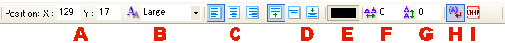

テキストオブジェクトが選択されているときに表示されるツールバー。
詳細設定は、テキストオブジェクト編集でも設定できます。

選択されたテキストオブジェクトの位置。
テキストオブジェクトの文字サイズを設定します。
テキストの行をそろえます。
テキストの列をそろえます。
文字の基本カラーを設定します。
テキストオブジェクト内の文字の行間隔を設定します。
テキストオブジェクト内の文字の列間隔を設定します。
禁則処理のon/offを設定します。
選択したテキストオブジェクトをページ内項目に設定します。